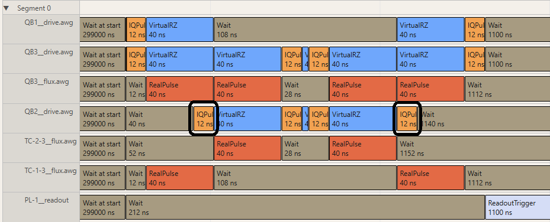

Circuit generation functions#
This is the first detailed section of the guide. By now, you should already know how to write a simple experiment. In
this section, we will explore the generation of circuits in more detail. This section will have a lot of overlap with
the iqm.pulse documentation, so it is recommended to check it too for full understanding.
The circuit is a heart of the experiment. It defines what is executed on the device. The circuit will look differently depending on the abstraction level of the experiment. As mentioned in the conceptualization part of the guide, we have broadly three abstraction levels: pulse, circuit and semi-abstract, mixing the two.
The circuit generation function always needs to take arguments components (or group for parallel experiments)
and builder and output a TimeBox, so what defines the abstraction level are the tools you can
use to create it. Roughly speaking:
In pulse-level circuit generation, you’d work directly with
Schedule, defining the final time-resolved experiment schedule, and then wrap it into an atomic TimeBox. This is not really recommended outside of very specific cases that require it, but I will describe how to do it. In most cases however, it is recommended to create a customQuantumOpandGateImplementationand work on a semi-abstract level, if possible.In semi-abstract circuit generation, which is the default one, you’d create TimeBoxes directly by asking the
ScheduleBuilderfor gate implementations. You may want to create your own gates, or use custom calibration, which replaces some of the calibrated parameters of the gate, but you’d let the compilation resolve the scheduling and timing, and handle which parts of which gate are executed on which physical instrument.In circuit-level generation, you’d create an abstract quantum circuit, and then only at the very end ask the ScheduleBuilder to convert it into a TimeBox while mapping logical qubits to physical qubits that come from the
componentsvariable. For very complicated experiments it is often necessary to convert or transpile the abstract quantum circuits before they can be run, and that is not possible to be done with TimeBoxes that already implement those operations.
As each of these ultimately yield a TimeBox, they can also be combined, immediately in the circuit generation. I will start from the default, semi-abstract approach, and cover tips and tricks to building good circuit generation functions. I will talk about the other two levels at the end.
Picking gates and implementations#
In IQM Pulse there are several gates defined. You can always check which gates are currently available to you by viewing
the QuantumOpTable attached to ScheduleBuilder as
ScheduleBuilder.op_table.
The most standard single qubit gate is called prx, standing for phased x rotation. QASM calls this gate r.
Calling get_implementation() returns a special object known as a gate factory. This object
is populated with the calibration for the gate and implementation selected, and calling it produces TimeBoxes
implementing different variants of the gate. Some gates, like prx, have arguments. This gate has two arguments,
rotation angle and phase. Phase 0 corresponds to an X rotation, phase \(\pi/2\) to Y rotation. We can generate some
TimeBoxes like so:
prx_factory = builder.get_implementation("prx", (qubit,)) # general
prx_factory = builder.prx((qubit,)) # shortcut, calls the above
sx = prx_factory(np.pi/2, 0,)
y = prx_factory(np.pi, np.pi/2)
sy = prx_factory.ry(np.pi/2) # shortcut for y rotations
Each of the default gates, such as prx also generates a builder shortcut method, which you can use if you prefer it.
They are generated when the ScheduleBuilder instance is initialized, so any gates you add
afterwards will not have one.
There is also a u gate, which corresponds to a single qubit unitary. This gate is by default implemented using
a single prx gate and virtual Z rotations that happen at the beginning and end of the gate, without increasing the
execution time. It may be useful specifically for complicated circuits using Hadamard gates, which cannot be
exactly described with a single prx. The syntax for the u gate arguments is (theta, phi, lambda), where:
Here are some examples:
u_factory = builder.get_implementation("u", (qubit,))
xh = u_factory(np.pi/2, -np.pi, np.pi) # X followed by H in one gate
x = u_factory(np.pi, -np.pi/2, np.pi/2)
h = u_factory.h() # shortcut for Hadamard gate, all Cliffords have shortcuts
c_xyz = u_factory.c_xyz() # Clifford shortcuts are always lowercase, but otherwise follow Qiskit and Stim conventions
U = np.array([[1, 0], [0, 1]]) # or any other unitary matrix
arbitrary_u = u_factory.from_unitary(U) # where U is a 2x2 unitary matrix
Sometimes, you would like to use a specific implementation of a given gate. This does move your experiment in the direction of full pulse abstraction level – for example, requiring specifically a flattop flux pulse suggests you are more interested in the physics of the fluxline and using the qubit only as a probe. Fixing an implementation in the circuit generation function is also a useful tool when prototyping.
A good example here is the rz gate, or a Z rotation by a certain angle. By default, it is implemented with a zero
duration virtual Z, which only adjusts the microwave phase for the next prx. However, this is not really a quantum
gate and it does not interact with operations that involve the physical couplings between the qubits and are implemented
with flux pulses. You can specify you’d like to use the physical rz implementation, which uses 3 prx gates,
in the following way:
rz = builder.get_implementation("rz", (qubit,))(angle) # default implementation
rz_virtual = builder.get_implementation("rz", (qubit,), impl_name="virtual")(angle) # virtual
rz_prx = builder.get_implementation("rz", (qubit,), impl_name="prx_composite")(angle) # PRX composite
There are other possible rz implementations, for example with AC Stark or flux pulses, they are not calibrated
by default.
Hint
If your experiment requires a specific implementation to work, put it in the circuit generation function. It makes the experiment less flexible, and narrows its focus, but sometimes it is exactly what you want.
Combining the boxes#
Each of the outputs of a factory is a TimeBox. In most cases, they will be atomic boxes,
or boxes that do not contain other TimeBoxes, and instead define a full time-resolved Schedule.
This schedule might include instructions on one or multiple channels. It also has a well defined duration, and blocks
all the involved channels for the duration (see the definitions of all the concepts in iqm.pulse
documentation).
Another type of TimeBox is a composite one. This box contains other TimeBoxes, and is not scheduled, which means it is
not yet decided when exactly would the specific pulses and other instructions be executed. If two atomic boxes are
included in a composite box in a certain order, and they contain the same channels, only then we can say that the later
one will be scheduled later. Composite TimeBoxes have an attribute scheduling_strategy, which can be
either ASAP (as soon as possible) or ALAP (as late as possible). Together with barriers and
nesting TimeBoxes, this is enough to specify the order and timing of instructions at the level of the entire schedule.
Speaking of nesting, composite TimeBoxes are infinitely nestable, which means that you can make a composite box out of multiple composite boxes.
Hint
Read carefully the iqm.pulse documentation regarding working with TimeBoxes,
they are powerful tools offering both flexibility and precision!
After going through the iqm-pulse documentation regarding TimeBoxes, let’s have a look at a slightly non-trivial example of how to use different ways of combining the boxes and scheduling them to our advantage. We’re going to extend our Bell experiment to 3 qubits, and create a Greenberger–Horne–Zeilinger (GHZ) state:
and then apply some Z rotations and unprepare it. We will need to use 2 CZ gates on each side, and some Hadamards to convert them into CX gates. We want the Hadamards on both sides to “hug” the CZ gates, because that maximizes the time their qubits are expected to be in the ground state. How to do this?
We split the circuit into three natural parts: preparation, application of the phase and uncomputation. The first part is scheduled ALAP, the last part is scheduled ASAP. Here’s how to do it:
def ghz_circuit(group: tuple[str, str, str], builder: ScheduleBuilder, phase: float = 0.0) -> TimeBox:
qubit_0_hadamard = builder.get_implementation("u", (group[0],)).h()
qubit_1_hadamard = builder.get_implementation("u", (group[1],)).h()
qubit_2_hadamard = builder.get_implementation("u", (group[2],)).h()
qubit_1_rz = builder.get_implementation("rz", (group[1],))(phase)
qubit_2_rz = builder.get_implementation("rz", (group[2],))(phase)
cz_01 = builder.get_implementation("cz", (group[0], group[1]))()
cz_12 = builder.get_implementation("cz", (group[1], group[2]))()
# set the first part of the circuit ALAP
# use the addition operator to allow the Hadamards to occur simultaneously
circuit_prep = TimeBox.composite([]).set_alap()
circuit_prep += qubit_0_hadamard
circuit_prep += qubit_1_hadamard
circuit_prep += qubit_2_hadamard
circuit_prep += cz_01
circuit_prep += cz_12
circuit_prep += qubit_1_hadamard
circuit_prep += qubit_2_hadamard
circuit_rz = TimeBox.composite([])
circuit_rz += qubit_1_rz
circuit_rz += qubit_2_rz
# set the last part of the circuit ASAP
circuit_unprep = TimeBox.composite([]).set_asap()
circuit_unprep += qubit_2_hadamard
circuit_unprep += qubit_1_hadamard
circuit_unprep += cz_12
circuit_unprep += cz_01
circuit_unprep += qubit_1_hadamard
circuit_unprep += qubit_2_hadamard
circuit_unprep += qubit_0_hadamard
# use the pipe | operator to schedule the three parts separately
return circuit_prep | circuit_rz | circuit_unprep
We initialize a new experiment with this circuit and inspect the scheduled segment using three qubits.

Note the first and the last pulse on the QB2__drive channel. If we scheduled the entire circuit ASAP,
the first pulse would happen immediately at the beginning. If we scheduled it ALAP, the last pulse would
be executed immediately before the readout.#
Another way to affect the scheduling is by using Barriers. They were not actually necessary here, and the splitting and different scheduling would be needed anyway.
Note
Q: Isn’t the pipe operator essentially a Barrier?
A: It acts effectively like a Barrier, but there is no actual Barrier box added anywhere. Unlike |, the Barrier
can specify the components it affects, and it does not allow one to schedule the two sides of it independently. It can
however be passed down from more abstract circuit definitions, where it exists as a concept, and ASAP/ALAP scheduling
does not. The pipe operator | has a large functional overlap with the Barrier, but it is not the same thing.
Scheduling tricks#
The scheduling algorithm can be trusted to schedule your entire circuit correctly. However, sometimes you really need to know the duration of a specific part of your schedule before the circuit is fully completed. The TimeBoxes do not have durations, because the duration depends on the scheduling. Not all hope is lost, though, because we may preschedule a part of the circuit to learn about its duration.
circuit = TimeBox.composite([])
circuit += qubit_0_hadamard
circuit += qubit_1_hadamard
circuit += qubit_2_hadamard
circuit += cz_01
circuit += cz_12
measure_then_circuit = builder.get_implementation("measure", (qubits[0],))() | circuit
duration_circuit = builder.resolve_timebox(circuit).duration_in_seconds(builder.channels)
duration_total = builder.resolve_timebox(measure_then_circuit).duration_in_seconds(builder.channels)
measure_extra_duration = duration_total - duration_circuit
In the example above, we are calculating what is the extra time during which the qubits 1 and 2 are idling while the qubit 0 is being measured. The measure operation can only be repeated with certain frequency, so calculating this extra time is quite complicated manually, as it depends on whether the minimum waiting time or the circuit duration is longer. The circuit duration is not simply the sum of durations of individual gates – that would be wasteful.
For more information about the pulse timing, check the iqm.pulse documentation.
To measure or not to measure#
As mentioned before, the default readout programming mode in Exa adds a measurement operation to all qubits at the end of the circuit. You can, however, also add measurements to the circuit explicitly in the generation function.
The programming mode is controlled by experiment options. More specifically, the option options.readout_programming_mode
accepts the values of the Enum ReadoutProgrammingMode.
Generally if adding measurements explicitly, you should set that to custom in your experiment.
Note
Q: Why not always add measurements explicitly? It seems to be cleaner that way.
A: If you call the builder for an implementation of a measure operation for multiple qubits, it will most of the time create a “multiplexed” pulse, where multiple qubits are measured together by sending a single, complicated pulse down the probeline connected to all of them via individual readout structures. This logic is implemented on the schedule level, and measuring qubits 1 and 2 together is generally different than measuring qubit 1, and then afterwards qubit 2. If using parallel framework, the scheduling will separate all the measurements for different groups of components, such as qubit pairs. This will slow the experiment down unnecessarily.
The general rule of thumb is to use the explicit measurement if you’re investigating the measurement operation itself, usually either calibrating or benchmarking it, or you need to add a mid-circuit measurement into a more complicated benchmark. This might however necessitate writing the circuit generation function without using the parallel framework.
Ok, but if you know you need to add more measurements, how do you do it?
measure_default = builder.get_implementation("measure", ("QB1",))() # results go to QB1_readout
measure_key = builder.get_implementation("measure", ("QB1",))(key="initial") # results go to QB1__initial_readout
# results go to QB1_readout, but can be used to condition a conditional prx
measure_feedback = builder.get_implementation("measure", ("QB1",))(feedback_key="reset")
# need both qubit and key. not every qubit's measurement can condition any qubit's conditional gate!
cc_prx = builder.get_implementation("cc_prx", ("QB2",))(feedback_qubit="QB1", feedback_key="reset")
# remember to add the classically conditioned PRX AFTER the readout providing the feedback bit, not before
measure_then_reset = measure_feedback | cc_prx # correct
reset_then_measure = cc_prx | measure_feedback # will generate errors - missing feedback key
# use "destructive" measurement calibration which maximizes assignment fidelity
measure_terminal = builder.get_implementation("measure_fidelity", ("QB1",))()
If multiple measurements of the same component exist in the circuit, additional dimension will be created in the
Dataset, named {qubit}__{key}_readout_slot. If each sweep spot has a different number of readouts
per label ({qubit}__{key}), the results are ragged into a pandas.MultiIndex named {qubit}__{key}_ragged_data_index.
This index might be difficult to work with and generally requires special treatment in analysis. It is however the best
way to interpret the measurement results using xarray without creating arrays full of NaNs or giving up
functionality. You might trigger this behaviour on purpose by setting the option
force_ragged_data to True. You should consider it strongly
if you expect users to add extra sweeps to the experiment – it will make it easier to write analysis. We will revisit
this topic in the compilation chapter.
When creating a circuit generation function where the number of measurements is an argument, for example:
def get_flip_measure_circuit(group: tuple[str], builder: ScheduleBuilder, n_measures: int = 0) -> TimeBox:
x = builder.get_implementation("prx", group)(np.pi, 0.0)
measure = builder.get_implementation("measure", ("QB1",))()
circuit = TimeBox.composite([x, measure] * n_measures).set_alap()
return circuit
Be aware that even though you might not be adding a default sweep over n_measures, it is perfectly possible for a user
to add an extra sweep over this circuit parameter, which will then create a ragged DataArray for
the user. It is up to you whether that is something that would be supported in analysis.
I will come back to these issues when discussing sweeps and analysis.
Making and converting an abstract circuit#
Exa is an experimentalist’s tool. Using it means you would like at least a little bit of control over the pulse level.
However, sometimes it is useful to start from a large, abstract circuit and modify it a little bit. In IQM QCCSW there
are compiling tools for languages such as Qrisp, Qiskit and Cirq, which when applied would yield circuits in the “IQM
format”. What is that format? At the bottom, it is a sequence of objects of type CircuitOperation.
These operations may or may not be mapped to physical qubits, but they do contain names of placeholder / logical qubits, in
their locus attribute. These are tuples of one or more computational elements (qubits or
resonators). Different names should be mapped to different physical elements.
In circuit generation function, you are given the list of physical components to act on, so if you want to use this
abstract circuit, you need to map the loci of all operations onto your physical components and create corresponding
TimeBoxes. This can be done using the circuit_to_timebox() method:
def get_timebox(components, builder: ScheduleBuilder, *args):
# create our circuit somehow
circuit = get_circuit(*args)
logical = ["QB0", "QB1", "QB2"]
timebox = builder.circuit_to_timebox(circuit, locus_mapping={label: qubit for label, qubit in zip(logical, components)})
return timebox
If the above is all you’d like to do, it is recommended to use the compiler directly. Remember however that TimeBoxes can be combined arbitrarily, so it is possible to add further pulse-level modifications to the resulting TimeBox by converting it yourself.
If you would like, it is also possible to create such an abstract circuit from scratch in the generation function. To
do that, use the CircuitOperationList, which extends the inbuilt list with
additional functionality. The syntax here is similar to one used in the major quantum programming languages.
# add three qubits and all the available operations, which are used to set the shortcut methods
circuit = CircuitOperationList(num_qubits=3, table=builder.op_table)
circuit.prx(np.pi/2, -np.pi/2, 0)
circuit.prx(np.pi/2, -np.pi/2, 1)
circuit.cz(0, 1)
circuit.cz(0, 2)
timebox = builder.circuit_to_timebox(circuit, locus_mapping={label: qubit for label, qubit in zip(circuit.qubits, components)})
Note
Q: This seems pretty pointless, you’re not achieving anything beyond using the ScheduleBuilder, are you?
A: Usage of this class in experiments is mostly convenience and preference. Using the Builder directly, you need to supply
the components / locus first, and then the arguments. Here, you supply the arguments first and then the locus only at
the end. It is genuinely useful when the circuits are long and difficult to compute, but we want to
execute them on many qubits or qubit groups in parallel. We don’t want to recalculate the circuits multiple times,
so we cache the function that prepares the CircuitOperationList, making the
overall process slightly shorter.
They are used in this exact way in the implementation of randomized benchmarking, as each unitary operation has
a defined unitary matrix, which are then combined to calculate
the overall circuit unitary via get_unitary().
Modifying the calibration of individual gates#
Let’s now move on to more pulse-level topics. In the iqm.pulse documentation
there is an example on how to modify the calibration stored in the builder:
builder.calibration["prx"]["drag_gaussian"][("QB1",)]["duration"] = 160e-9
You should not do this in a circuit generation function. The builder object is attached to the experiment instance
and is not recreated between sweep spots, the swept values are just updated. Updating the calibration in this way in
the context of Experiment may cause some “leakage”.
Instead, you may use an argument to get_implementation() called
priority_calibration. This updates the calibration only for the wanted GateImplementation
and locus. What is more, you can use both the default calibration and the priority one in one circuit, which is useful
for some experiments.
Pulse amplitude#
For example, we want to write a single qubit error amplification experiment to fine tune the amplitude of the \(\pi\)
rotation gate. The circuit we would like to have starts from preparing an equal superposition state with a \(\pi/2\)
rotation, followed by repeated \(\pi\) rotations. In order to calibrate the amplitude, we need to sweep it, but we
trust that our initial guess for the amplitude was quite close, so we do not want to modify the amplitude of the first
pulse. Thus, we may introduce the parameter scale which enters the circuit via priority calibration.
def pi_amplification_circuit(group: tuple[str], builder: ScheduleBuilder, n_gates: int = 0, scale: float = 1.0):
qubit = group[0]
default_prx = builder.get_implementation("prx", (qubit,))
default_calibration = default_prx.calibration_data
scaled_calibration = {
"amplitude_i" : default_calibration["amplitude_i"] * scale,
"amplitude_q" : default_calibration["amplitude_q"] * scale,
}
pi2 = default_prx(np.pi/2, 0.0)
pi_scaled = builder.get_implementation("prx", (qubit,), priority_calibration=scaled_calibration)(np.pi, 0.0)
circuit = TimeBox.composite([pi2] + n_gates * [pi_scaled])
return circuit
The priority_calibration is a dictionary which updates the existing calibration. It does not need to have all the
keys and values, but it does need to have the same nesting structure.
Pulse timing#
Another good use case for the priority calibration is to achieve a finer control over timing. The timing resolution of
wait() operations is limited by the granularity of the channel, typically
to around 4ns. If for any reason you need to introduce a timing control finer than that, it is possible using priority
calibrations of the center_offset parameter most of the implemented Waveform
classes have. Typically we would follow these steps:
Obtain the granularity of the channel from the builder.
Split the required wait into a multiple of the granularity and the remainder.
Add a coarse wait.
Add one granularity to the gate duration via priority calibration.
Move the gate waveform by the fine wait using the
center_offsetpriority calibration.
def two_cz_with_wait(group: tuple[str, str], builder: ScheduleBuilder, delay: float = 5e-9) -> TimeBox:
# get the coupler name
chip_topology = Experiment().chip_topology
coupler = chip_topology.get_coupler_for(group[0],group[1])
# get the gate duration
cz_first = builder.get_implementation("cz", group)()
cal_data = builder.get_implementation("cz", group).calibration_data
gate_duration = cal_data["duration"]
channel = builder.get_flux_channel(coupler)
# smallest contiguous wait
granularity_samples = builder.channels[channel].instruction_duration_granularity
granularity = granularity_samples / builder.channels[channel].sample_rate
delay_coarse = np.floor(delay / granularity) * granularity
delay_fine = delay - delay_coarse
# increasing duration by D adds D/2 at the beginning and the end of the waveform, so we move the
# waveform earlier by D/2 first.
priority_calibration = {"duration": gate_duration + granularity}
delta = delay_fine - granularity / 2
cal_data = builder.get_implementation("cz", group).calibration_data
priority_calibration["coupler"] = {"center_offset": cal_data["coupler"]["center_offset"] + delta}
if "qubit" in cal_data:
priority_calibration["qubit"] = {"center_offset": cal_data["qubit"]["center_offset"] + delta}
cz_second = builder.get_implementation("cz", group, priority_calibration=priority_calibration)()
wait = builder.wait(group, delay_coarse)
return cz_first + wait + cz_second
The circuit by itself does not do anything useful, but you may include it as a building block in a more complicated experiment.
Note
Q: I would assume this fine control over timing would be implemented by some kind of automatic pass, which I would not need to care about. Why isn’t it?
A: This is not that easy to do, and this functionality is rarely needed. The fine control is implemented where it is needed the most. For example, trigger timing granularity is only 1 sample, achieved with similar tricks. Nevertheless, it is good to know this trick, because fine timing can unlock marvelous physics by allowing us to look into high frequency effects.
Registering a new gate in an experiment#
Sometimes, you would need to make a specific gate just for the experiment you’re writing. Maybe it is a prototype, or some very specific physics experiment that needs this gate.
Hint
If developing a new gate, it is generally recommended to add it to the set of gates that are registered automatically everywhere.
The general guidance on making custom gates can be found in the iqm.pulse documentation.
Following that, I will show how to add the gates to your experiment. The ScheduleBuilder is only created by the
experiment class just before the run. Therefore, the gate needs to be registered with the experiment itself, not just the
builder.
This can be done through the method setup_additional_init_properties():
def setup_additional_init_properties(self) -> None:
gate_name = "flux_pulse"
impl_name = "constant"
self.register_gate_implementation(
gate_name,
impl_name,
ConstantFluxPulse,
quantum_op=QuantumOp(
gate_name,
1, # arity
implementations={
impl_name: ConstantFluxPulse
}
)
)
if self.gates.get(gate_name, {}).get(impl_name) is None:
# These are just some defaults so that we don't run into errors too early.
cal_defaults = {
"duration": 1e-7,
"amplitude": 0.2,
}
self.set_calibration_data_for_gate_implementation(gate_name, impl_name, {(): cal_defaults})
It is also worth to set some defaults. Typically you would anyway override them somehow in
update_settings(), but having a default allows one to run the experiment before
all work is done.
This gate can then be used by calling:
flux_pulse = builder.get_implementation("flux_pulse", ("QB1",))()
flux_pulse = builder.get_implementation("flux_pulse", ("QB1",), impl_name="constant")()
Working directly with a Schedule#
The entire TimeBox paradigm has been invented so that no one has to schedule things manually anymore. However, sometimes it is still necessary. Typically in those situations it is recommended to make a new gate implementation instead. This guide would nevertheless be incomplete if I didn’t explain how to play with schedules directly.
Even though TimeBox is a single class, it has two variants: composite and atomic. The
composite TimeBox would have an attribute children populated with other TimeBoxes, and the atomic TimeBox has its
attribute atom populated with a Schedule instance. This TimeBox is essentially
a wrapper around the Schedule, so that it can be combined with other TimeBoxes seamlessly.
We can access the atom in the circuit generation function and make some changes to it. Each Schedule is a dictionary,
where keys are specific channels, and values are iterables of instructions (Instruction).
Generally any Schedule which results from some kind of compilation or scheduling algorithm will have the same duration
on all the channels, but ones made by hand do not need to. In such a case, they are typically padded to “hard box”
(pad_to_hard_box()), or Wait instructions are appended to the ends of all
the channels to make their durations all equal.
One case in which one might want to modify the Schedule by hand is to bypass restrictions put in place by gate implementations.
For example, the prx implementations typically only use the drive channel for one qubit. However, they block all
the channels associated with that qubit. This is to prevent executing flux pulses during the microwave pulses.
You may be interested in writing a very specific physics experiment where the flux pulse must occur during the microwave pulse, though. What then? Well, you can just force it to behave this way!
Have a look at the example below:
# extract channel names
drive_channel = builder.get_drive_channel(qubit)
flux_channel = builder.get_flux_channel(flux_component)
# get atomic TimeBoxes
microwave_block = builder.get_implementation("prx", [qubit])(np.pi, 0)
flux_block = builder.get_implementation("flux_pulse", [flux_component])()
# get the instructions from each atomic TimeBox, then schedule them to happen at the same time
single_block_schedule = Schedule(
{drive_channel: microwave_block.atom[drive_channel], flux_channel: flux_block.atom[flux_channel]}
)
# wrap into an atomic TimeBox
single_block_timebox = TimeBox.atomic(single_block_schedule, locus_components=group, label="drive_flux_block")
Other genuine uses of this functionality might include directly assessing probe pulses, their timing, integration and multiplexing.
Conclusions#
Now you should have all the information necessary to write good and useful circuit generation functions! Remember, keep it simple! Try not to use advanced tricks if simple do job.